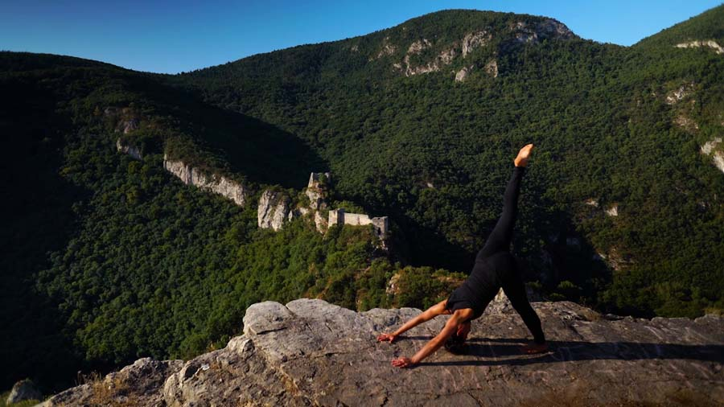
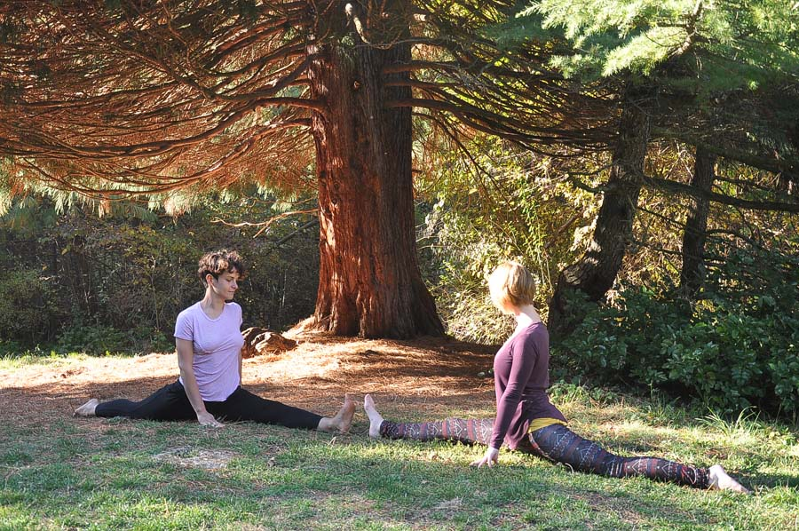
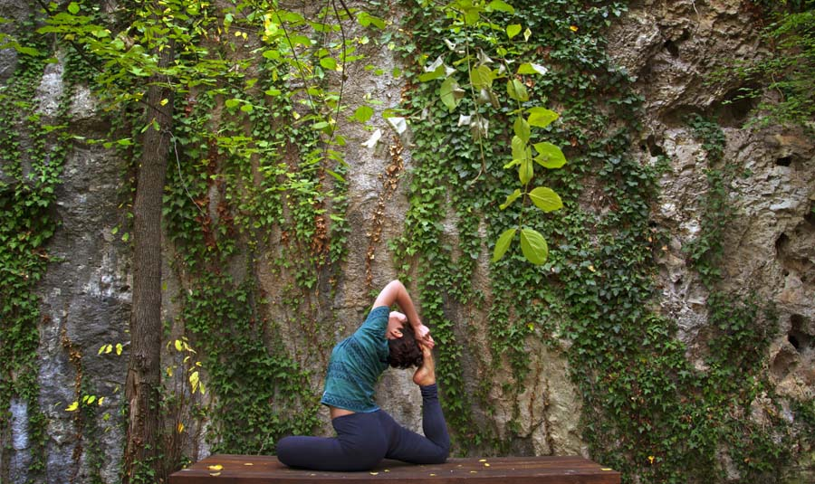

Joga u Sokobanji
Šta je hatha joga?
(Reč hatha na sanskritu znači snaga.)
Kako da se opustite, obnovite energijom svoje telo i um ? Danas je
ovo pitanje prisutnije više nego ikada ranije. Svest o zdravom
načinu životapostaje opsesija savremenog čoveka. U užurbanom tempu
svakodnevnice sve je teže pronaći vremena za sebe. Stres se
akomulira u mišićima, previše sedimo, osećamo napetost u raznim
delovima tela, posebno u leđima. Zaboravili smo kakvog je zvuka
tišina, otuđili se od prirode. Zaboravili smo da je zdravlje osnova
života.
Hata joga može vam pokazati put prema zdravlju, opuštanju i
pronalaženju unutrašnjeg mira. Uz pomoć ove drevne discipline možete
osvestiti disanje i povezati se sa samim sobom. Časovi joge mogu vam
pružiti fleksibilnost i snagu ne samo tela već i uma. Ovo je stil
vežbanja koji balansira i otvara čitavo telo. Vežbe se izvode
lagano, nadovezujući se jedna na drugu u opuštajućem ritmu. Cilj je
povećanje gipkosti tela, jačanje mišića i povećanje snage uz
istovremeno uklanjanje fizičke i psihičke napetosti. Rezultat je
duboka relaksacija.


O Sarga studiju
(Reč Sarga na sanskritu znači priroda.)
Sarga joga nudi časove u prirodi na otvorenom kao i u studiu. Svaki
čas obuhvata početno centriranje, vežbe i položaje zagrevanja,
izvođenje joga položaja (asana), upoznavanje tehnika disanja
(pranajama), čas se završava opuštanjem (joga nidra). Časovi su za
sve one koji nikada nisu probali ali i za one koji se već bave jogom
ili su u oblasti neke druge fizičke delatnosti.
Tokom toplijih meseci časovi hatha joge održavaju se na otvorenom.
Prostrana Sokobanjska kotlina okružena planinama idealan je ambijent
za praktikovanje joge. Časovi se izvode u prepodnevnim i kasno
popodnevnim terminima sa pogledom na Rtanj. Vežbe disanja
(pranajama) u vazdušnoj banji pravi je spoj za poklonike zdravog
načina života. Cilj ovakve joga prakse je dublje povezivanje sa
prirodom i životnom energijom. Sama reč joga na sanskritu znači
ujediniti, povezati. Biti prisutan i biti jedno sa prirodom jedan je
od osnovnih aspekata joge.Većina asana reflektuje prirodne elemente.
Postavljajući svoje telo u položaj drveta učimo se uzemljivanju.
Disanje u ciklusu talasa daje nam osecaj harmonije i vanvremenske
povezanosti sa univerzumom.
Po završetku časa telo pulsira novom energijom, mišići su prijatno
istegnuti bez osećaja iscrpljenosti. Metabolizam se ubrzava,
usporava starenje. Ukoliko želite da osvestite svoje telo i da
prodišete punim plućima onda je ovo pravi izbor za vas. Vežbe se
održavaju u manjim grupama. Moguće je zakazivanje i individualnih
časova (priroda, studio, prostor vežbača).
Instruktor
(Aleksandra Janković)
Ja sam Aleksandra Janković, sertifikovana instruktorka joge. Jogom se bavim od 2012. godine. Otkrila sam dobrobiti joge vežbajući rekreativno, a ona je ubrzo postala sastavni deo mog života. Kurs za instruktora joge završila sam 2016. godine u školi Vidya Yoga učitelja Dragana Lončara u Beogradu, koja stavlja težište na tradicionalnu hatha jogu. Svoje znanje o jogi unapređujem pohađanjem seminara i radionica. Joga praksu nastavljam kontinuirano i kroz druge stilove joge — od duboke restorativne prakse do dinamične ashtange. Volim da šetam i provodim vreme u prirodi i smatram da su joga i priroda savršen spoj. Po struci sam istoričarka umetnosti, a u slobodno vreme volim da putujem i čitam.
